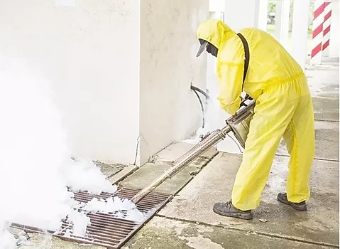

Extermination Famed : venir à bout des insectes nuisibles extermination Famed votre spécialiste de la désinsectisation à Montreal met son professionnalisme au service de la désinfection, dératisation et l'extermination de tous les types de nuisibles à Montreal Qu’il s’agisse d’insectes rampants, volants ou xylophages, FamedAnti-nuisible est apte à éliminer tous les insectes nuisibles qui pourraient nuire à votre santé et à votre habitat. Faites vite appel à nous pour votre extermination
